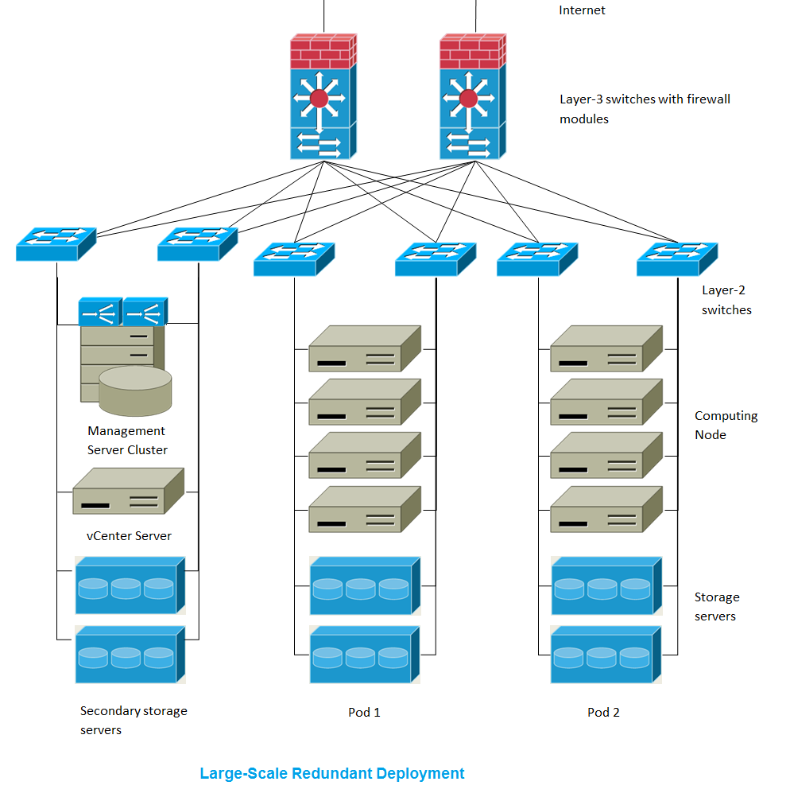

The architecture used in a deployment will vary depending on the size and purpose of the deployment. This section contains examples of deployment architecture, including a 小规模部署 useful for test and trial deployments and a fully-redundant large-scale setup for production deployments.
小规模部署¶

This diagram illustrates the network architecture of a small-scale CloudStack deployment.
- A firewall provides a connection to the Internet. The firewall is configured in NAT mode. The firewall forwards HTTP requests and API calls from the Internet to the 管理服务. The Management Server resides on the management network.
- A layer-2 switch connects all physical servers and storage.
- A single NFS server functions as both the primary and secondary storage.
- The 管理服务 is connected to the management network.
大规模冗余部署¶

This diagram illustrates the network architecture of a large-scale CloudStack deployment.
- A layer-3 switching layer is at the core of the data center. A router
redundancy protocol like VRRP should be deployed. Typically high-end
core switches also include firewall modules. Separate firewall
appliances may also be used if the layer-3 switch does not have
integrated firewall capabilities. The firewalls are configured in NAT
mode. The firewalls provide the following functions:
- Forwards HTTP requests and API calls from the Internet to the 管理服务. The 管理服务 resides on the management network.
- When the cloud spans multiple zones, the firewalls should enable site-to-site VPN such that servers in different zones can directly reach each other.
- A layer-2 access switch layer is established for each pod. Multiple switches can be stacked to increase port count. In either case, redundant pairs of layer-2 switches should be deployed.
- The 管理服务 cluster (including front-end load balancers, 管理服务 nodes, and the MySQL database) is connected to the management network through a pair of load balancers.
- Secondary storage servers are connected to the management network.
- Each pod contains storage and computing servers. Each storage and computing server should have redundant NICs connected to separate layer-2 access switches.
独立存储网络¶
In the 大规模冗余部署 described in the previous section, storage traffic can overload the management network. A separate storage network is optional for deployments. Storage protocols such as iSCSI are sensitive to network delays. A 独立存储网络 ensures guest network traffic contention does not impact storage performance.
Multi-Node 管理服务¶
The CloudStack 管理服务 is deployed on one or more front-end servers connected to a single MySQL database. Optionally a pair of hardware load balancers distributes requests from the web. A backup management server set may be deployed using MySQL replication at a remote site to add DR capabilities.

The administrator must decide the following.
- Whether or not load balancers will be used.
- How many Management Servers will be deployed.
- Whether MySQL replication will be deployed to enable disaster recovery.
Multi-Site Deployment¶
The CloudStack platform scales well into multiple sites through the use of zones. The following diagram shows an example of a multi-site deployment.

Data Center 1 houses the primary 管理服务 as well as zone 1. The MySQL database is replicated in real time to the secondary 管理服务 installation in Data Center 2.

This diagram illustrates a setup with a 独立存储网络. Each server has four NICs, two connected to pod-level network switches and two connected to storage network switches.
There are two ways to configure the storage network:
- Bonded NIC and redundant switches can be deployed for NFS. In NFS deployments, redundant switches and bonded NICs still result in one network (one CIDR block+ default gateway address).
- iSCSI can take advantage of two 独立存储网络s (two CIDR blocks each with its own default gateway). Multipath iSCSI client can failover and load balance between 独立存储网络s.

This diagram illustrates the differences between NIC bonding and Multipath I/O (MPIO). NIC bonding configuration involves only one network. MPIO involves two separate networks.
Hypervisor 选型¶
CloudStack supports many popular hypervisors. Your cloud can consist entirely of hosts running a single hypervisor, or you can use multiple hypervisors. Each cluster of hosts must run the same hypervisor.
You might already have an installed base of nodes running a particular hypervisor, in which case, your choice of hypervisor has already been made. If you are starting from scratch, you need to decide what hypervisor software best suits your needs. A discussion of the relative advantages of each hypervisor is outside the scope of our documentation. However, it will help you to know which features of each hypervisor are supported by CloudStack. The following table provides this information.
| Feature | XenServer | vSphere |
(RHEL) |
LXC | HyperV | Bare Metal |
|---|---|---|---|---|---|---|
| 网络限流 | Yes | Yes | Yes | No | ? | N/A |
| 安全 groups in zones that use basic networking | Yes | No | Yes | Yes | ? | No |
| iSCSI | Yes | Yes | Yes | Yes | Yes | N/A |
| FibreChannel | Yes | Yes | Yes | Yes | Yes | N/A |
| Local Disk | Yes | Yes | Yes | Yes | Yes | Yes |
| HA | Yes | Yes (Native) | Yes | ? | Yes | N/A |
| Snapshots of local disk | Yes | Yes | Yes | ? | ? | N/A |
| Local disk as data disk | Yes | No | Yes | Yes | Yes | N/A |
| Work load balancing | No | DRS | No | No | ? | N/A |
| Manual live migration of VMs from host to host | Yes | Yes | Yes | ? | Yes | N/A |
| Conserve management traffic IP address by using link local network to communicate with virtual router | Yes | No | Yes | Yes | ? | N/A |
Hypervisor Support for 主存储¶
The following table shows storage options and parameters for different hypervisors.
| 主存储 Type | XenServer | vSphere | KVM - RHEL | LXC | HyperV |
|---|---|---|---|---|---|
| Format for Disks, 模板, and Snapshots | VHD | VMDK | QCOW2 | VHD | |
| iSCSI support | CLVM | VMFS | Yes via Shared Mountpoint | Yes via Shared Mountpoint | No |
| Fiber Channel support | Yes, Via existing SR | VMFS | Yes via Shared Mountpoint | Yes via Shared Mountpoint | No |
| NFS support | Yes | Yes | Yes | Yes | No |
| Local storage support | Yes | Yes | Yes | Yes | Yes |
| Storage over-provisioning | NFS | NFS and iSCSI | NFS | No | |
| SMB/CIFS | No | No | No | No | Yes |
XenServer uses a clustered LVM system to store VM images on iSCSI and Fiber Channel volumes and does not support over-provisioning in the hypervisor. The storage server itself, however, can support thin-provisioning. As a result the CloudStack can still support storage over-provisioning by running on thin-provisioned storage volumes.
KVM supports “Shared Mountpoint” storage. A shared mountpoint is a file system path local to each server in a given cluster. The path must be the same across all Hosts in the cluster, for example /mnt/primary1. This shared mountpoint is assumed to be a clustered filesystem such as OCFS2. In this case the CloudStack does not attempt to mount or unmount the storage as is done with NFS. The CloudStack requires that the administrator insure that the storage is available
With NFS storage, CloudStack manages the overprovisioning. In this case the global configuration parameter storage.overprovisioning.factor controls the degree of overprovisioning. This is independent of hypervisor type.
Local storage is an option for primary storage for vSphere, XenServer, and KVM. When the local disk option is enabled, a local disk storage pool is automatically created on each host. To use local storage for the System Virtual Machines (such as the 虚拟路由器), set system.vm.use.local.storage to true in global configuration.
CloudStack supports multiple primary storage pools in a 集群. For example, you could provision 2 NFS servers in primary storage. Or you could provision 1 iSCSI LUN initially and then add a second iSCSI LUN when the first approaches capacity.
最佳实践¶
Deploying a cloud is challenging. There are many different technology choices to make, and CloudStack is flexible enough in its configuration that there are many possible ways to combine and configure the chosen technology. This section contains suggestions and requirements about cloud deployments.
These should be treated as suggestions and not absolutes. However, we do encourage anyone planning to build a cloud outside of these guidelines to seek guidance and advice on the project mailing lists.
Process 最佳实践¶
- A staging system that models the production environment is strongly advised. It is critical if customizations have been applied to CloudStack.
- Allow adequate time for installation, a beta, and learning the system. Installs with basic networking can be done in hours. Installs with advanced networking usually take several days for the first attempt, with complicated installations taking longer. For a full production system, allow at least 4-8 weeks for a beta to work through all of the integration issues. You can get help from fellow users on the cloudstack-users mailing list.
Setup 最佳实践¶
- Each host should be configured to accept connections only from well-known entities such as the CloudStack 管理服务 or your network monitoring software.
- Use multiple clusters per pod if you need to achieve a certain switch density.
- Primary storage mountpoints or LUNs should not exceed 6 TB in size. It is better to have multiple smaller primary storage elements per cluster than one large one.
- When exporting shares on primary storage, avoid data loss by restricting the range of IP addresses that can access the storage. See “Linux NFS on Local Disks and DAS” or “Linux NFS on iSCSI”.
- NIC bonding is straightforward to implement and provides increased reliability.
- 10G networks are generally recommended for storage access when larger servers that can support relatively more VMs are used.
- Host capacity should generally be modeled in terms of RAM for the guests. Storage and CPU may be overprovisioned. RAM may not. RAM is usually the limiting factor in capacity designs.
- (XenServer) Configure the XenServer dom0 settings to allocate more memory to dom0. This can enable XenServer to handle larger numbers of virtual machines. We recommend 2940 MB of RAM for XenServer dom0. For instructions on how to do this, see http://support.citrix.com/article/CTX126531. The article refers to XenServer 5.6, but the same information applies to XenServer 6.0.
Maintenance 最佳实践¶
- Monitor host disk space. Many host failures occur because the host’s root disk fills up from logs that were not rotated adequately.
- Monitor the total number of VM instances in each cluster, and disable allocation to the cluster if the total is approaching the maximum that the hypervisor can handle. Be sure to leave a safety margin to allow for the possibility of one or more hosts failing, which would increase the VM load on the other hosts as the VMs are redeployed. Consult the documentation for your chosen hypervisor to find the maximum permitted number of VMs per host, then use CloudStack global configuration settings to set this as the default limit. Monitor the VM activity in each cluster and keep the total number of VMs below a safe level that allows for the occasional host failure. For example, if there are N hosts in the cluster, and you want to allow for one host in the cluster to be down at any given time, the total number of VM instances you can permit in the cluster is at most (N-1) * (per-host-limit). Once a cluster reaches this number of VMs, use the CloudStack UI to disable allocation to the cluster.
Warning
The lack of up-do-date hotfixes can lead to data corruption and lost VMs.
Be sure all the hotfixes provided by the hypervisor vendor are applied. Track the release of hypervisor patches through your hypervisor vendor’s support channel, and apply patches as soon as possible after they are released. CloudStack will not track or notify you of required hypervisor patches. It is essential that your hosts are completely up to date with the provided hypervisor patches. The hypervisor vendor is likely to refuse to support any system that is not up to date with patches.